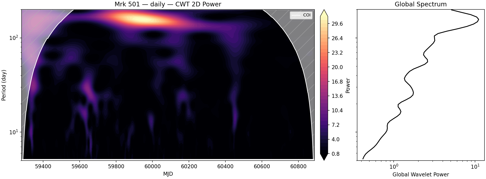
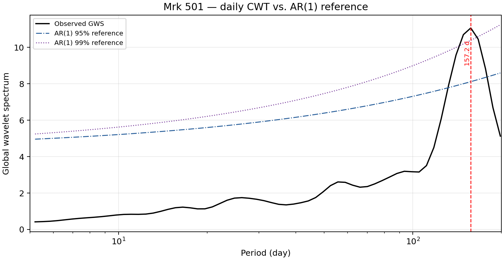
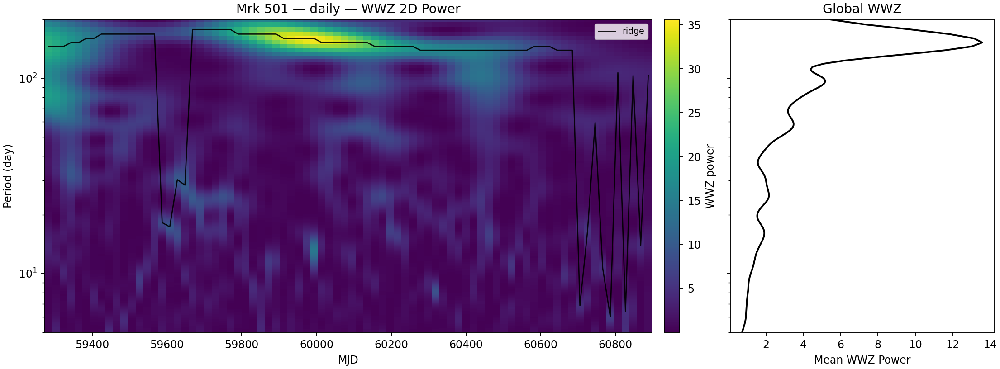
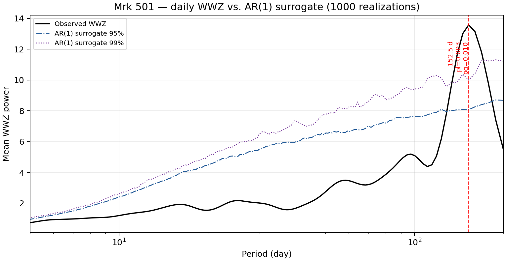

This presentation follows a source-first order. It summarizes the existing report and does not introduce a new analysis.
Analysis framework
Strict flux products and two complementary time-frequency tests
Data
Weekly: 229 bins per source, 2021-03-08 to 2025-07-27. Daily: 1570 / 1560 bins for Mrk 421 / Mrk 501, through 2025-07-31.
Forward-folded normalization N0 at 3 TeV; rows with N0_err > 5× the cadence-specific median are removed.
Periodicity tests
CWT: Morlet global wavelet spectrum against analytic AR(1) 95% / 99% references. WWZ: 1000 fitted-AR(1) surrogates with local and global false-alarm probabilities.
No source × cadence × method trial correction is applied in this snapshot.
Interpretation rule: a pointwise or local 99% crossing is not, by itself, a publication-level QPO detection.
Statistical interpretation
A QPO claim must survive four increasingly strict tests
1 · Red-noise null
Fit an AR(1) process to the observed light curve, preserving its lag-1 correlation, mean, variance, sampling, and measurement errors.
2 · Pointwise threshold
At a fixed, pre-specified period, compare the observed CWT/WWZ power with the AR(1) 95% and 99% reference curves.
3 · Search-wide FAP
For WWZ, 1000 AR(1) surrogate spectra define the probability that a peak this strong appears anywhere in the 50–600 d search.
4 · Claim-level robustness: apply the look-elsewhere correction across sources, cadences, and methods; require an independent cadence or future-data recovery; and reject boundary peaks or features spanning too few cycles. A local 99% crossing alone is evidence for follow-up, not a detection.
Decision rule used here: quote pointwise references and WWZ global FAP separately; retain all current signals as candidates/diagnostics until the full trial budget and independent confirmation are satisfied.
Explain the hierarchy: AR(1) handles red noise, pointwise curves test a fixed period, global FAP handles the scanned period range, and a publication-level claim additionally needs the full trial budget and independent recovery.
Weekly strict-flux light curve and per-bin TS: median TS = 22.27; TS ≥ 9 in 165/229 weeks.
Mrk 501 · daily periodicity
The strongest candidate: 152–157 days in both methods
Method switch updates both panels

CWT time-period map and global wavelet spectrum.

157.2 d: above both AR(1) 95% and 99% analytic references.

WWZ time-period map and global spectrum.

152.5 d: local FAP 0.30%; global FAP 1.00% from 1000 surrogates.
The candidate is absent in weekly binning and has not been corrected across sources, cadences, and methods.
Main conclusions
One candidate warrants follow-up; neither source supports a current QPO claim
Mrk 421No robust detection
The ≈128–132 d feature is local-only / sub-threshold; the ≈51 d xgm feature fails the same red-noise tests.
Mrk 501152–157 d candidate
Daily CWT and WWZ both cross 99% references, but weekly binning does not reproduce it.
Next statistical gatePre-register + extend
Test the fixed target band on new WCDA coverage and apply a unified look-elsewhere correction.
Neither WCDA result reproduces the ≈300 d (Mrk 421) or ≈326 d (Mrk 501) GeV periods reported by Ren et al. (2022).
Appendix · eight-source control sample
One source per page: light curve, periodicity, and significance
1ES 1959+650
1ES 1727+502
1ES 2344+514
BL Lacertae
NGC 1275
M 87
4C +42.22
IC 310
All eight are Tier C / diagnostic-only in the current strict-flux survey. Nominal peaks must not be interpreted without accounting for low detection quality and survey-level trials.
Appendix A1 · weekly strict flux
1ES 1959+650
228 retained bins · Tier C CWT 308.9 d · WWZ 309.3 d WWZ global FAP 64.4%
Flux, CWT and WWZ maps, and 95% / 99% AR(1) references on both global spectra.
Appendix A2 · weekly strict flux
1ES 1727+502
229 bins · Tier C CWT 583.1 d · WWZ 505.1 d WWZ global FAP 25.7%; <4 cycles
Flux, CWT and WWZ maps, and 95% / 99% AR(1) references on both global spectra.
Appendix A3 · weekly strict flux
1ES 2344+514
229 bins · Tier C CWT 367.3 d crosses 95%, not 99% WWZ 342.5 d: global FAP 17.9%
Flux, CWT and WWZ maps, and 95% / 99% AR(1) references on both global spectra.
Appendix A4 · weekly strict flux
BL Lacertae
229 bins · Tier C CWT 308.9 d crosses 95%, not 99% WWZ 309.3 d: global FAP 11.6%
Flux, CWT and WWZ maps, and 95% / 99% AR(1) references on both global spectra.
Appendix A5 · weekly strict flux
NGC 1275
229 bins · Tier C CWT 436.8 d and WWZ 505.1 d cross 99% WWZ global FAP 2.9%; <4 cycles
Flux, CWT and WWZ maps, and 95% / 99% AR(1) references on both global spectra.
Appendix A6 · weekly strict flux
M 87
229 bins · Tier C CWT 367.3 d · WWZ 383.7 d WWZ global FAP 87.0%
Flux, CWT and WWZ maps, and 95% / 99% AR(1) references on both global spectra.
Appendix A7 · weekly strict flux
4C +42.22
229 bins · Tier C CWT 145.8 d · WWZ 149.7 d WWZ global FAP 100.0%
Flux, CWT and WWZ maps, and 95% / 99% AR(1) references on both global spectra.
Appendix A8 · weekly strict flux
IC 310
229 bins · Tier C CWT 583.1 d · WWZ rises to 600.0 d boundary Pointwise AR(1) references shown
Flux, CWT and WWZ maps, and 95% / 99% AR(1) references; no interior WWZ peak is defined.